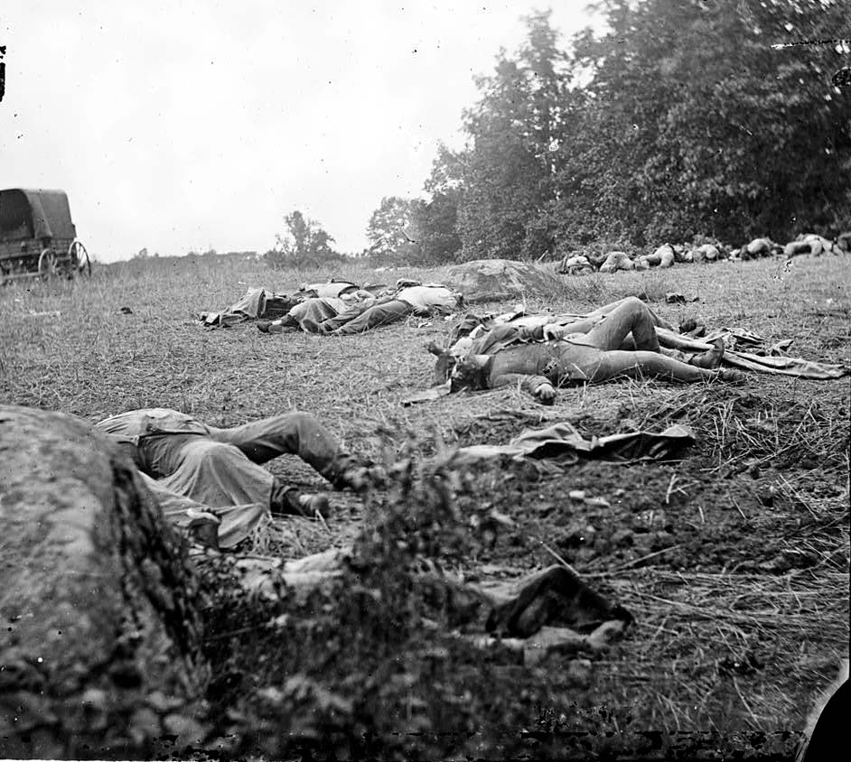
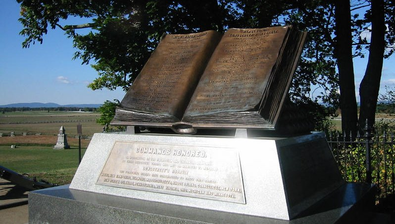

|
As a lowering sky heralded the approach of rain, the
exhausted armies confronted each other across the
carnage-strewn field of Gettysburg. It was the Fourth of
July, but few soldiers were in a mood for celebration. While
the Army of the Potomac had obstinately held its round
against repeated Confederate onslaughts, Meade's forces had
sustained some 23,000 casualties, and many Yankees feared
that another Rebel assault was inevitable.
In fact Lee's Army of Northern Virginia was in no
condition to renew the conflict. The Southern forces had
lost in excess of 20,000 men--some place the figure as high
as 28,000--and with nearly 40 percent of his command out of
action, Lee had little choice but to abandon his invasion of
the North and withdraw across the Potomac into Virginia.
By late afternoon the
rain was falling, and Lee began the delicate task of
extricating his troops from their positions north and west
of the Federal defenses. The slowest-moving element of his
force started first--a 17-mile-long wagon train carrying
supplies and ambulances filled with groaning wounded.
Brigadier General John D. Imboden's cavalry was detailed to
escort the wagons toward the Potomac. Lee instructed
General Jubal Early to keep his division in place until July
5, when he would bring up the rear of the retreating army.
As the dispirited Confederate soldiers donned their packs
and blanket rolls and started southward, they passed through
horrific scenes of slaughter. "The sights and sounds that
assailed us were simply indescribable," recalled Virginia
artillery lieutenant Robert Stiles, "corpses swollen to
twice their original size, some of them actually burst
asunder with the pressure of four gases and vapors."
When Federal skirmishers moved
tentatively forward to scout the vacated enemy positions,
they too passed over the battlefield's human wreckage,
|

Gettysburg was the bloodiest battle of the Civil War, and dead soldiers
littered the battlefield after the fighting was over. It took months to remove all
the bodies.
|
gagging as they began to bury the decomposing dead. Sergeant
Thomas Meyer of the 148th Pennsylvania noted that the stench
"would come up in waves and when at its worst the breath
would stop in the throat; the lungs could not take it in,
and a sense of suffocation would be experienced. We would
cover our faces with our hands and turn the back toward the
breeze and retch and gasp for breath."
With the realization of Union victory, the handful of
reporters accompanying Meade's army scrambled to spread the
news to the Northern public. On July 4 correspondent Samuel
Wilkeson, who had arrived at Gettysburg midway in the
battle, filed a detailed account for the New York Times that
credited the stalwart Federals with "breaking the pride and
power of the rebel invasion." But Wilkeson's elation
evaporated when he learned that his 19-year-old son, Bayard,
had been fatally wounded on the first day of the engagement.
"My pen is heavy," Wilkeson wrote. "O, you dead, who at
Gettysburg have baptized with your blood the second birth of
Freedom in America, how you are to be envied! I rise from a
grave whose wet clay I have passionately kissed, and I look
up and see Christ spanning the battlefield with his feet,
and reaching fraternal and loving up to heaven. His right
hand opens the gates of Paradise, with his left he sweetly
beckons to these mutilated, bloody, swollen forms to
ascend."
Once it became clear that the fighting was over,
Gettysburg's civilians began to emerge from cellars and
hiding places to survey the damage that had been inflicted
upon their community. Many townsfolk pitched in to help
bury the dead, while those caught looting personal
belongings from the fallen or making off with saddles and
weapons were forced to do the grisly work at gunpoint. Mrs.
Elizabeth M. Thorn, the wife of Evergreen Cemetery's
superintendent, helped to bury 105 soldiers, despite the
fact that she was in her sixth month of pregnancy. By the
time she had finished, her clothing was saturated with
blood.
Besides the corpses of more than 5,000 men and 3,000
horses and mules, the landscape was littered with the
detritus of battle. "Trees were scarred and shattered,"
wrote Pennsylvania college professor Michael Jacobs,
thousands of minie balls, of solid shot and shells, lay
scattered over the ground, and cast-off coats, knapsacks,
blankets, canteens, scabbards, and other accouterments in
vast numbers, were everywhere to be met with."
Virtually every house and barn in Gettysburg had been
turned into an improvised hospital, where haggard surgeons
struggled to save the mangled wounded. Carpets and floors
were awash in gore, walls were spattered with blood, and
piles of amputated limbs were heaped outside the open
windows. Because of the sheer number of wounded, many
sufferers had to wait days before receiving attention. A
worker for the U.S. Sanitary Commission, a private relief
organization, found Gettysburg's courthouse overflowing with
casualties, "lying on the bare floor, covered with blood,
and dirt, and vermin, entirely naked having perhaps only a
newspaper to protect their festering wounds from the flies!"
Shaken by the carnage, and
knowing that the Army of the Potomac had been strained
nearly to the breaking point by forced marches and
unprecedented casualties, Meade was slow to take up the
pursuit of Lee's retreating columns. "Push forward," Army
Chief of Staff Henry W. Halleck wired from Washington, "and
fight Lee before he can cross the Potomac." But it was July
5 before the first of Meade's forces--Sedgwick's relatively
unbloodied Sixth Corps--got underway, and two days later
before the other corps began to follow in Lee's wake.
Riding south into Maryland, the Union cavalry clashed
repeatedly with Jeb Stuart's Confederate horsemen, who
skillfully fended off the Yankee troopers. Although days of
downpours had turned roads into quagmires and slowed the
Federal infantry to a tortuous crawl, the rain had also
swelled the Potomac to such an extent that Lee's army was
delayed on the Maryland side of the river. While engineers
struggled to span the torrent with pontoons, the Confederate
soldiers erected a line of massive earthworks covering the
approaches to the bridgeheads.
By July 12 General Meade's army was in position facing
the Rebel lines. But the sight of heavily entrenched
opponents gave Meade pause and filled his soldiers with
foreboding. The Army of the Potomac had learned what it was
like to storm fortified positions at the Battle of
Fredericksburg, and no one was eager for a repetition of
that one-sided slaughter. When Meade called a counsel of
|

The full significance of the Battle of Gettysburg was not immediately
apparent to participants, and it was not until the months and years thereafter that the engagement
came to be understood as a turning point of the Civil War. This was particularly true
in the South, where defeated Confederates ultimately came to regard Gettysburg--and, in particular Pickett's Charge--as
the "high water mark" of their war effort, the closest they came to victory. Today,
the high water monument commemorates the spot where Pickett's Charge achieved its
deepest level of penetration into the Union lines.
|
war, most of his corps commanders advised against an attack,
and the general decided to wait. Meanwhile, Lee was finally
able to start his troops across the precarious pontoon
bridges, and although 1,500 men of General Heth's division
were cut off and captured above the crossing at Falling
Waters, by July 14 the Army of Northern Virginia was once
again on Southern soil.
No men in Lee's army felt the failure of their campaign
more keenly than the Marylanders, who had all too briefly
cherished the hope that the invasion of the North would
forever free their native state from Federal occupation.
Yet, as Major W. W. Goldsborough of the Confederacy noted,
the spirit of the Southern soldiers was far from broken.
"And still these men were cheerful to a degree that could
hardly have been expected under the trying circumstances,"
Goldsborough wrote, "and they felt the loss of comrades left
behind torn and bleeding on that bloody field at Gettysburg
more than they did their own sufferings."
The high tide of the Confederacy had crested at
Gettysburg, but the escape of Lee's army ensured that the
terrible war would continue until a Federal commander
brought that redoubtable force to bay. The Battle of
Gettysburg did not prove decisive, but the experiences of
those terrible three days, seared into the soul of every
Survivor, bear witness to the self-sacrifice of men who
cherished idealistic beliefs above life itself.
Fifty years after the battle, with the country reunited
and the torn landscape healed, Joshua Lawrence Chamberlain
traveled to Gettysburg to revisit the scene of his epic
fight as commander of the 20th Maine on Little Round Top.
Just months before his death, Chamberlain wrote of the
enduring message of that hallowed terrain:
"I went--it is not long ago--to stand again upon that
crest whose one day's crown of fire has passed into the
blazoned coronet of fame ... I sat there alone, on the
storied crest, till the sun went down as it did before over
the misty hills, and the darkness crept up the slopes, till
from all earthly sight I was buried as with those before.
But oh, what radiant companionship rose around, what
steadfast ranks of power, what bearing of heroic souls. Oh,
the glory that beamed through those nights and days ... The
proud young valor that rose above the mortal, and then at
last was mortal after all."
Source: Megan Quinn for the History 139A website
|